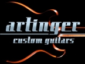

Electric Guitars - A
MAIN MENU
MegaGuitar is not endorsed by, sponsored by, or affiliated with the
following companies.
Company names, slogans, and logos are exclusive trademarks of their
respective companies and are displayed for informational, editorial and
research purposes only.
Abasi Concepts
https://abasiconcepts.com/
Laguna Hills, CA USA
Tosin Abasi, Ivan Chopik
Contact: https://abasiconcepts.com/pages/contact-faq
Electric Guitars, Multi-Scale, Extended Range
Acacia Guitars
https://www.acaciaguitars.com/
Escondido CA, USA
Scott Lienhard, Greg Lienhard
Acaciaguitars@gmail.com
760-331-3426
Electric Guitars, Electric Basses
Agape Guitars
http://www.agapeguitars.com/
Morgantown, WV 26501 USA
Rich Chaffins
+1 304-376-0605
rich@agapeguitars.com
Custom Electric Guitars, Private Guitar Lessons
Agostin Custom Guitars
https://www.agostinguitars.com/
70021 Acquaviva delle Fonti (BA), Italy
Agostino Carella
+393922729694
info@agostinguitars.com
Electric Guitars, Electric Bass Guitars, ST-Type, TR-Type, LP-Type
Alembic Guitars
http://www.alembic.com/
Rohnert Park, CA 94928 USA
Ron Wickersham, Susan Wickersham
(707) 523-2611
alembic@alembic.com
Custom Electric Guitars, Custom Electric Bass Guitars
Alex Bishop Guitars
BS5 0DB Bristol, United Kingdom
Alex Bishop
+44 7515 440071
alex@alexbishopguitars.com
Electric Guitars
Alexander James Guitars
https://www.alexanderjamesguitars.com/
Peterborough, ON K9J 6Y3, Canada
Alexander James
+1 705-808-1046
Contact: https://www.alexanderjamesguitars.com/contact
Electric Guitars, Electric Bass Guitars, Exotic Woods, Guitar Amps,
Guitar Repair
Allen Eden Guitars
https://www.allenedenguitars.com/
El Monte, CA 91732 USA
Todd Staples
(626) 258-0009
Todd@allenedenguitars.com
Electric Guitars, Electric Bass Guitars, Guitar Parts, Accessories
Alloy Guitars
https://www.alloyguitars.com/
Beaverton, Oregon 97006 USA
Steve Bennett, Joseph Burrow
(888) 214-8314
info@alloyguitars.com
DIY Guitar Kits, DIY Bass Guitar Kits, ST-Type, TR-Type, LP-Type, Guitar
Parts, Guitar Bodies, Guitar Necks, Lutherie Services
Alquier Guitars
https://alquierguitars.com/
66600 Rivesaltes, France
Jean-Yves Alquier
+33 4 68 51 39 35
info@alquierguitars.com
Electric Guitars, Hollow-Body Electric Guitars, Electric Bass Guitars,
Custom Guitar Pickups, Eco-Friendly
Aluminati Guitar Company
https://aluminatiguitars.com/
Asheville, NC 28803 USA
James Little
828-417-7574
james@aluminatiguitars.com
Electric Guitars, Aluminum Electric Guitars, Carbon Fiber, Guitar Parts,
Guitar Necks, Guitar Bridges
Ambler Custom Guitars
City, State, Country
**NEED CONTACT INFO**
Aria Guitars
http://www.ariaguitars.com/
Nagoya, 464-0077 Japan
Kazuyuki Miyamoto
Contact: http://ariaguitarsglobal.com/contact-us/
Electric Guitars, Electric Bass Guitars, Acoustic Guitars, Classical
Guitars, Guitar Strings, Guitar Accessories
Aristides Instruments
https://aristidesinstruments.com/
2031BC Haarlem, Netherlands
Pascal Langelaar
31-238442169
info@aristidesinstruments.com
Electric Guitars, Electric Bass Guitars, Composite Materials,
Multi-Scale, Extended Range
High-end electric guitars & basses made out of proprietary material
Arium. Injection-molded and handcrafted in Haarlem, the Netherlands.
Arrenbie Guitars
https://www.arrenbieguitars.be/
8310 Brugge, Belgium
Ralph Bonte
0486 40 40 55
ralph@arrenbieguitars.be
Electric Guitars, Acoustic Guitars, Electric Resonator Guitars,
Weissenborn Lap Steel Guitars

Artinger Custom Guitars
City, State, Country
Matthew J. Artinger
**NEED CONTACT INFO**
Asher Guitars & Lap Steels
https://asher-guitars-lap-steels-store.myshopify.com/
Venice, CA 90291 USA
Bill Asher
310-821-2888
bill.asher@asherguitars.com
Electric Guitars, Electric Lap Steel Guitars, Luthier Supplies, CNC
Inlay and Face Plates with Inlay Pockets
Asken Guitars
https://www.askenguitars.com/
Los Angeles, CA 90034 USA
Fren Asken
818-468-2207
fren@askenguitars.com
Electric Guitars, Guitar Repair, Guitar Modifications, Evertune Bridge,
True Temperament System, Buzz Feiten Tuning System, S-Mod 1, S-Mod 2,
Dually Mod
Atelier Z Guitars
https://www.atelierz.co.jp/
Shinjuku-ku, Tokyo, Japan
Hirokichi Motohashi
+0332680151
postmaster@atelierz.co.jp
Electric Guitars, Electric Bass Guitars, Guitar Preamps, Guitar
Accessories, Guitar Parts
Ava Guitars
http://avaguitars.com/
Porto, Portugal
André Antunes
info@avaguitars.com
Electric Guitars, Carbon-Fiber Electric Guitars, Custom Guitar
Electronics, Carbon-Fiber
Aviator Custom Guitars
https://www.aviator-guitars.com/
Komenskeho 889 75301 Hranice, Czech Republic
Jan Dietl, Mason Lloyd Hilligoss
info@aviator-guitars.com
Electric Guitars, Electric Bass Guitars, Custom Electric Guitars, Custom
Electric Bass Guitars, Headless Electric Guitars, Multi-Scale, Extended
Range
Ayers Guitar Co.
http://www.ayersguitarco.com/
Scottsdale, AZ 85253 USA
David Ayers
(480) 612-3848
info@ayersguitarco.com
Electric Guitars, Acoustic Guitars, Guitar Repair